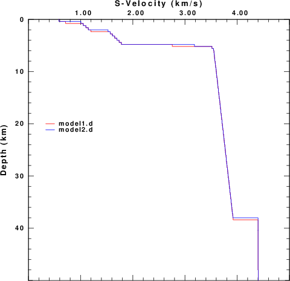
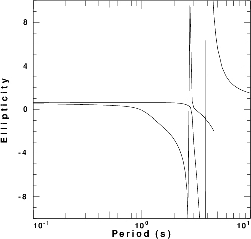

The purpose of this note is to consider the
ellipticity properties of the Rayleigh wave
for certain models. For a halfspace,
Rayleigh wave particle motion is retrograde
elliptical and the ratio of the maximum
radial displace to vertical displacement is
about 0.68. However this is not true
for some velocity models.
Denolle et al (2012) [ Denolle, M. A., E. M.
Dunham and G. Beroze (2012). Solving the
surface-wave eigenproblem with Chebyshev
spectral
collocation, Bull. Seism. Soc. Am. 102,
1214-1223] noted that the fundamental model
Rayleigh wave exhibited
retrograde elliptical motion at long and
short periods but prograde motion at
intermediate periods for some gradient
models. This is seen in Figure 6 of their paper
which compares the ellipticity of two
models. The model96 versions of
these models are denoted as Denolle1.mod and
Denolle2.mod.
Figure 1 compares these two models.
| Figure 1. Comparison of the two Denolle models. The figure at the right compares the upper 10 km of the two models. | |
In 2015, I received an Email from Andrea Morelli, IGNV Bologna, Italy. The email asked about the behavior of some velocity models that give prograde elliptical motion for the fundamental mode Rayleigh wave. The model96 versions of these models are model1.d and model2.d . The only difference between these models and those actually provided is that the lower 24 km of each of the original models was truncated because the limitation of 200 layers in my version of the CPS code. These models are plotted in Figure 2.
|  | |
| Figure 2.
Comparison of the two models from
Andrea Morelli. The figure at the
right compares the upper 10 km of
the two models. |
|
A recent paper by Cercato (2018)
[Certaco, Michele (2018). Sensitivity of
Rayleigh wave ellipticity and implications
for surface wave inversion, Geophys.
J. Int 213, 489-510, doi:
10.1093/gji/ggx558] used two models by
Hobiger et al (2013) [ Hobiger, M. et al.,
(2013) . Ground structure imaging by
inversions of Rayleigh
wave ellipticity: sensitivity analysis and
application to European strong motion
sites, Geophys. J. Int., 192,
207–229. ] to test a
methodology for estimating the partial
derivatives of ellipticity with respect to
medium parameters. The model96 version
of these two models are
HoA.mod and
Hob.mod. These models are compared
in Figure 3. HoA.mod has a large velocity
discontinuity at a depth of 200 m.
| Figure 3. Hobinger (2013) models A and B |
The Denolle and Morelli models are
characterized by gradients while the
Hobiger (2013) models are simpler
layer-cake models, differing by the very
large velocity discontinuity at the layer
boundary with the halfspace.
The VOLIII surface-wave codes of Computer
Programs in Seismology [Herrmann, R. B.
(2013) Computer programs in seismology: An
evolving tool for instruction and
research, Seism. Res. Lettr. 84,
1081-1088, doi:10.1785/0220110096] were
used to compute dispersion curves for the
phase velocity, ellipticity and amplitude
factor. These are presented in
Figure 4 for each of the five velocity
models. In these figures the fundamental
and first higher modes are plotted. The
fundamental mode is the only mode at the
longest period.
| Model |
Phase velocity | Ellipticity | AR |
| Denolle1.mod | |||
| Denolle2.mod |  | ||
| model1.d | |||
| model2.d | |||
| HoA.mod | |||
| HoB.mod |
These models were selected by the authors
because of the "strange" behavior of the
ellipticity at certain
frequencies/periods. Before discussing the
results, note that the program sdpegn96
used to plot the ellipticities does
handle the discontinuity in
ellipticity very well. This "strange"
behavior is illustrated by using the
command sdpegn96 -R -E -ASC to
crate the file SREGN.ASC for
a special run that emphasizes frequencies
near 0.7 Hz for the
HoA.mod. The output near
a frequency of 0.669 Hz is as follows:
RMODE NFREQ PERIOD(S) FREQUENCY(Hz) C(KM/S) U(KM/S) ENERGY GAMMA(1/KM) ELLIPTICITY
0 19 1.4837 0.67400 2.0951 1.2253 0.18078E-03 0.0000 -68.191
0 20 1.4859 0.67300 2.0973 1.2367 0.12069E-03 0.0000 -82.476
0 21 1.4881 0.67200 2.0994 1.2481 0.73381E-04 0.0000 -104.53
0 22 1.4903 0.67100 2.1016 1.2595 0.38338E-04 0.0000 -142.92
0 23 1.4925 0.67000 2.1036 1.2706 0.15202E-04 0.0000 -224.33
0 24 1.4948 0.66900 2.1057 1.2817 0.27082E-05 0.0000 -525.36
0 25 1.4970 0.66800 2.1077 1.2930 0.38194E-06 0.0000 1382.6
0 26 1.4993 0.66700 2.1097 1.3038 0.75552E-05 0.0000 307.33
0 27 1.5015 0.66600 2.1116 1.3148 0.24005E-04 0.0000 170.43
0 28 1.5038 0.66500 2.1135 1.3256 0.48567E-04 0.0000 118.46
0 29 1.5060 0.66400 2.1154 1.3362 0.81047E-04 0.0000 90.663
0 30 1.5083 0.66300 2.1172 1.3469 0.12106E-03 0.0000 73.344
0 31 1.5106 0.66200 2.1190 1.3574 0.16779E-03 0.0000 61.601
Notice the very large values of the
ellipticity. The change in sign indicates
the transition from retrograde ellipical
motion (positive values) to prograde
elliptical motion (negative values).
Also note that the Energy term = 1 / 2 c U
I0 is very small is the region
where the ellipticity os large.
The reason for plotting the energy term AR is that the amplitude spectra of the vertical and radial components of motion, UZ ans UR, respectively, for a point impulsive source applied at the surface of a layered halfspace are
UZ = AR / sqrt ( kr) UR = AR Ellipticity / sqrt(kr)
For this model, we can say that the vertical
component spectra at 0.662 Hz is about 500
times greater than at 0.668 Hz. The radial
component spectra at 0.662 Hz is about 25
times greater than at 0.668 Hz.
Some of the models have gradients, and
yet one of the the simple Hobiger (2013)
models shows the same behavior, while the
other does not. So is the extreme
ellipticity a function of gradients or of
some other feature of the models?
To test the significant of the velocity
contract at the halfspace, consider the
following suites of models:
H(km) Vp(km/s) Vs(km/s) Rho(gm/cm3)
-----------------------------------------------------
6 Vp1 Vs1 Rho1
--- 6.0 3.5 2.7
-----------------------------------------------------
For the velocities in the layer,
Model Vp1 Vs1 Rho1
4.0 4.0000 2.0000 2.0000
3.0 3.0000 1.5000 2.0000
2.0 2.0000 1.0000 2.0000
1.5 1.5000 0.7500 2.0000
1.0 1.0000 0.5000 2.0000
Figure 5 compares the velocity models while
Figures 6 compares the fundamental mode
Rayleigh wave phase velocity, ellipticity
and AR.
| Figure 5.Comparison of velocity models to test the effect of the size of the velocity discontinuity on ellipticity |
| Figure 6.
Phase velocity, ellipticity and
amplitude factor for the five
models. |
||
To unserstand the information in Figure 6,
first note that the interesting features,
such as the rapid increase in velocity
from the halfspace Rayleigh velocity for
the top layer to the bottom layer, the
rapid change in ellipicity and the very
small amplitude factor, move toward longer
periods at the velocities of the top
layers decrease. This is not unexpected.
As the velocity decreases the phase
velocity dispersion seems to develop a
kink. The AR term shows a
difference in levels when the models are
compared. It is not unexpected that the
same source applied at the surface of the
weaker (lower velocity) model creates
greater ground motions.
For the first two models, the the
ellipticity does not vary much when
compared to the last three models. For
each model the SREGN.ASC file was
created. Subsets of these files are given
for each model:
Moel 1.0
RMODE NFREQ PERIOD(S) FREQUENCY(Hz) C(KM/S) U(KM/S) ENERGY GAMMA(1/KM) ELLIPTICITY
0 1 1.0000 1.0000 0.46626 0.46626 4.1932 0.0000 0.63890
0 2 1.1000 0.90909 0.46626 0.46626 3.8120 0.0000 0.63890
.....
0 54 23.000 0.43478E-01 0.58513 0.24971 0.46448 0.0000 0.49870
0 55 24.000 0.41667E-01 0.62743 0.20853 0.52217 0.0000 0.45287
0 56 25.000 0.40000E-01 0.69740 0.16019 0.62094 0.0000 0.37103
0 57 26.000 0.38462E-01 0.83020 0.13229 0.63923 0.0000 0.15504
0 58 27.000 0.37037E-01 0.96139 0.29052 0.20352 0.0000 -0.34901
0 59 28.000 0.35714E-01 1.0194 0.46780 0.78244E-01 0.0000 -0.86562
0 60 29.000 0.34483E-01 1.0562 0.55691 0.42573E-01 0.0000 -1.3225
0 61 30.000 0.33333E-01 1.0870 0.59746 0.27457E-01 0.0000 -1.7391
0 62 32.000 0.31250E-01 1.1462 0.61982 0.14495E-01 0.0000 -2.5159
0 63 34.000 0.29412E-01 1.2111 0.61177 0.88422E-02 0.0000 -3.2918
0 64 36.000 0.27778E-01 1.2876 0.59108 0.57019E-02 0.0000 -4.1403
0 65 38.000 0.26316E-01 1.3819 0.56347 0.37072E-02 0.0000 -5.1486
0 66 40.000 0.25000E-01 1.5022 0.53185 0.23321E-02 0.0000 -6.4632
0 67 42.000 0.23810E-01 1.6611 0.49972 0.13363E-02 0.0000 -8.4118
0 68 44.000 0.22727E-01 1.8769 0.47575 0.60739E-03 0.0000 -12.019
0 69 46.000 0.21739E-01 2.1660 0.48967 0.13153E-03 0.0000 -23.432
0 70 48.000 0.20833E-01 2.4902 0.63984 0.57223E-05 0.0000 87.891
0 71 50.000 0.20000E-01 2.7289 1.0453 0.13605E-03 0.0000 12.091
0 72 55.000 0.18182E-01 2.9535 2.1056 0.27924E-03 0.0000 3.7389
0 73 60.000 0.16667E-01 3.0244 2.5492 0.26950E-03 0.0000 2.4031
.....
0 91 200.00 0.50000E-02 3.1801 3.1444 0.58569E-04 0.0000 0.80118
0 92 210.00 0.47619E-02 3.1818 3.1481 0.55536E-04 0.0000 0.79343
0 93 220.00 0.45455E-02 3.1833 3.1515 0.52807E-04 0.0000 0.78662
0 94 230.00 0.43478E-02 3.1847 3.1545 0.50339E-04 0.0000 0.78059
0 95 240.00 0.41667E-02 3.1860 3.1572 0.48094E-04 0.0000 0.77521
0 96 250.00 0.40000E-02 3.1871 3.1596 0.46045E-04 0.0000 0.77039
Model 1.5
RMODE NFREQ PERIOD(S) FREQUENCY(Hz) C(KM/S) U(KM/S) ENERGY GAMMA(1/KM) ELLIPTICITY
0 1 1.0000 1.0000 0.69939 0.69939 1.2424 0.0000 0.63890
0 2 1.1000 0.90909 0.69939 0.69939 1.1295 0.0000 0.63890
.....
0 47 16.000 0.62500E-01 0.92585 0.33307 0.21926 0.0000 0.46661
0 48 17.000 0.58824E-01 1.0787 0.23594 0.27088 0.0000 0.35153
0 49 18.000 0.55556E-01 1.3904 0.30374 0.15401 0.0000 -0.10204
0 50 19.000 0.52632E-01 1.5424 0.74727 0.29323E-01 0.0000 -0.96585
0 51 20.000 0.50000E-01 1.6125 0.91612 0.11739E-01 0.0000 -1.7503
0 52 21.000 0.47619E-01 1.6716 0.96345 0.63720E-02 0.0000 -2.4820
0 53 22.000 0.45455E-01 1.7313 0.97222 0.39174E-02 0.0000 -3.2235
0 54 23.000 0.43478E-01 1.7954 0.96622 0.25341E-02 0.0000 -4.0343
0 55 24.000 0.41667E-01 1.8659 0.95426 0.16540E-02 0.0000 -4.9889
0 56 25.000 0.40000E-01 1.9443 0.94107 0.10519E-02 0.0000 -6.2086
0 57 26.000 0.38462E-01 2.0320 0.93069 0.62456E-03 0.0000 -7.9358
0 58 27.000 0.37037E-01 2.1293 0.92809 0.32207E-03 0.0000 -10.773
0 59 28.000 0.35714E-01 2.2356 0.94053 0.12235E-03 0.0000 -16.787
0 60 29.000 0.34483E-01 2.3477 0.97858 0.18349E-04 0.0000 -40.744
0 61 30.000 0.33333E-01 2.4596 1.0549 0.47040E-05 0.0000 73.526
0 62 32.000 0.31250E-01 2.6525 1.3438 0.15021E-03 0.0000 9.9856
0 63 34.000 0.29412E-01 2.7820 1.7196 0.29981E-03 0.0000 5.2053
0 64 36.000 0.27778E-01 2.8628 2.0397 0.36603E-03 0.0000 3.5857
.....
0 91 200.00 0.50000E-02 3.1816 3.1487 0.57328E-04 0.0000 0.77519
0 92 210.00 0.47619E-02 3.1832 3.1520 0.54464E-04 0.0000 0.77005
0 93 220.00 0.45455E-02 3.1846 3.1550 0.51875E-04 0.0000 0.76546
0 94 230.00 0.43478E-02 3.1859 3.1577 0.49522E-04 0.0000 0.76134
0 95 240.00 0.41667E-02 3.1871 3.1601 0.47375E-04 0.0000 0.75762
0 96 250.00 0.40000E-02 3.1882 3.1624 0.45408E-04 0.0000 0.75424
Model 2.0
RMODE NFREQ PERIOD(S) FREQUENCY(Hz) C(KM/S) U(KM/S) ENERGY GAMMA(1/KM) ELLIPTICITY
0 1 1.0000 1.0000 0.93253 0.93253 0.52415 0.0000 0.63890
0 2 1.1000 0.90909 0.93253 0.93253 0.47650 0.0000 0.63890
.....
0 43 12.000 0.83333E-01 1.2092 0.47988 0.11480 0.0000 0.48317
0 44 13.000 0.76923E-01 1.4469 0.33931 0.13771 0.0000 0.36125
0 45 14.000 0.71429E-01 1.9391 0.49356 0.64503E-01 0.0000 -0.17635
0 46 15.000 0.66667E-01 2.1136 1.3110 0.48615E-02 0.0000 -2.0268
0 47 16.000 0.62500E-01 2.1905 1.4261 0.12297E-02 0.0000 -4.1870
0 48 17.000 0.58824E-01 2.2643 1.4498 0.38775E-03 0.0000 -7.3722
0 49 18.000 0.55556E-01 2.3404 1.4678 0.89468E-04 0.0000 -14.876
0 50 19.000 0.52632E-01 2.4184 1.4987 0.20254E-05 0.0000 -94.140
0 51 20.000 0.50000E-01 2.4957 1.5515 0.27371E-04 0.0000 23.917
0 52 21.000 0.47619E-01 2.5691 1.6296 0.11358E-03 0.0000 10.754
0 53 22.000 0.45455E-01 2.6359 1.7297 0.22012E-03 0.0000 6.9623
0 54 23.000 0.43478E-01 2.6944 1.8431 0.31763E-03 0.0000 5.1712
0 55 24.000 0.41667E-01 2.7443 1.9593 0.39179E-03 0.0000 4.1405
.....
0 91 200.00 0.50000E-02 3.1833 3.1525 0.56807E-04 0.0000 0.76466
0 92 210.00 0.47619E-02 3.1848 3.1556 0.54009E-04 0.0000 0.76046
0 93 220.00 0.45455E-02 3.1861 3.1583 0.51476E-04 0.0000 0.75668
0 94 230.00 0.43478E-02 3.1873 3.1608 0.49170E-04 0.0000 0.75326
0 95 240.00 0.41667E-02 3.1884 3.1631 0.47062E-04 0.0000 0.75016
0 96 250.00 0.40000E-02 3.1894 3.1651 0.45128E-04 0.0000 0.74732
Model 3.0
RMODE NFREQ PERIOD(S) FREQUENCY(Hz) C(KM/S) U(KM/S) ENERGY GAMMA(1/KM) ELLIPTICITY
0 1 1.0000 1.0000 1.3988 1.3988 0.15530 0.0000 0.63890
0 2 1.1000 0.90909 1.3988 1.3988 0.14118 0.0000 0.63890
.....
0 41 10.000 0.10000 2.4472 1.0636 0.18680E-01 0.0000 0.49327
0 42 11.000 0.90909E-01 2.6450 1.7965 0.54847E-02 0.0000 0.85617
0 43 12.000 0.83333E-01 2.7248 2.1710 0.25266E-02 0.0000 1.2107
0 44 13.000 0.76923E-01 2.7724 2.3351 0.16257E-02 0.0000 1.4299
0 45 14.000 0.71429E-01 2.8077 2.4257 0.12406E-02 0.0000 1.5418
0 46 15.000 0.66667E-01 2.8366 2.4872 0.10353E-02 0.0000 1.5863
0 47 16.000 0.62500E-01 2.8614 2.5347 0.90787E-03 0.0000 1.5919
0 48 17.000 0.58824E-01 2.8830 2.5744 0.81949E-03 0.0000 1.5760
0 49 18.000 0.55556E-01 2.9022 2.6090 0.75307E-03 0.0000 1.5488
0 50 19.000 0.52632E-01 2.9193 2.6399 0.70014E-03 0.0000 1.5162
0 51 20.000 0.50000E-01 2.9348 2.6679 0.65616E-03 0.0000 1.4817
0 52 21.000 0.47619E-01 2.9488 2.6935 0.61851E-03 0.0000 1.4472
0 53 22.000 0.45455E-01 2.9615 2.7170 0.58558E-03 0.0000 1.4136
.....
0 91 200.00 0.50000E-02 3.1876 3.1618 0.56175E-04 0.0000 0.75218
0 92 210.00 0.47619E-02 3.1889 3.1643 0.53450E-04 0.0000 0.74889
0 93 220.00 0.45455E-02 3.1900 3.1666 0.50976E-04 0.0000 0.74591
0 94 230.00 0.43478E-02 3.1910 3.1686 0.48722E-04 0.0000 0.74319
0 95 240.00 0.41667E-02 3.1919 3.1705 0.46658E-04 0.0000 0.74070
0 96 250.00 0.40000E-02 3.1928 3.1722 0.44762E-04 0.0000 0.73842
Model 4.0
RMODE NFREQ PERIOD(S) FREQUENCY(Hz) C(KM/S) U(KM/S) ENERGY GAMMA(1/KM) ELLIPTICITY
0 1 1.0000 1.0000 1.8651 1.8650 0.65521E-01 0.0000 0.63890
0 2 1.1000 0.90909 1.8651 1.8650 0.59569E-01 0.0000 0.63890
.....
0 51 20.000 0.50000E-01 3.0501 2.9281 0.56817E-03 0.0000 1.0879
0 52 21.000 0.47619E-01 3.0562 2.9380 0.53821E-03 0.0000 1.0816
0 53 22.000 0.45455E-01 3.0618 2.9470 0.51183E-03 0.0000 1.0743
0 54 23.000 0.43478E-01 3.0671 2.9552 0.48833E-03 0.0000 1.0665
0 55 24.000 0.41667E-01 3.0719 2.9629 0.46718E-03 0.0000 1.0583
0 56 25.000 0.40000E-01 3.0765 2.9700 0.44800E-03 0.0000 1.0500
0 57 26.000 0.38462E-01 3.0808 2.9767 0.43048E-03 0.0000 1.0416
0 58 27.000 0.37037E-01 3.0848 2.9830 0.41439E-03 0.0000 1.0332
0 59 28.000 0.35714E-01 3.0886 2.9889 0.39953E-03 0.0000 1.0250
0 60 29.000 0.34483E-01 3.0922 2.9946 0.38576E-03 0.0000 1.0170
0 61 30.000 0.33333E-01 3.0955 2.9999 0.37294E-03 0.0000 1.0091
.....
0 91 200.00 0.50000E-02 3.1934 3.1739 0.55602E-04 0.0000 0.74094
0 92 210.00 0.47619E-02 3.1943 3.1757 0.52934E-04 0.0000 0.73830
0 93 220.00 0.45455E-02 3.1952 3.1774 0.50510E-04 0.0000 0.73590
0 94 230.00 0.43478E-02 3.1960 3.1789 0.48298E-04 0.0000 0.73371
0 95 240.00 0.41667E-02 3.1967 3.1803 0.46272E-04 0.0000 0.73170
0 96 250.00 0.40000E-02 3.1973 3.1816 0.44409E-04 0.0000 0.72984
This last example demonstrates that the
very high values of ellipticity do not
require a gradient model, but do require a
large velocity contrast at some depth.
Although the upper part of the Hobiger
models are the same, the HoB model does
not have a sharp velocity contrast at the
lowest boundary, and the ellipicity of
that model does not show any extreme
values. We also observe that when the
ellipicity becomes vary large, the
corresponding energy term becomes very
small. Thus there is the real question
of whether such large values of
ellipticity can be observed. This is a
valid question since it seem as if the
first higher mode could overcome the lack
of signal in the fundamental model.
If a large value of ellipticity is
observed, then that is an indication of a
very sharp layer boundary at depth. The
phase velocity dispersion might not be
able to image a sharp discontinuity, but
the constraint from the ellipticity might
be useful.
To address this question, displacement synthetics were created for receivers at the surface due to a point vertical force with an impulsive source time function. These are the ZVF and RVF Green's functions. For simple processing, the R/Z ratio was formed from the amplitude ratio of the spectra of the two traces. The sampling interval and distance were selected to be appropriate for the disperion plots made earlier. This was done for the fudnamental mode and for all modes. The following set of figures shows the model name, the R/Z ratios, the spectra from just the fundamental mode synthetics, and finally the spectra form the multimode synthetics.
| Model |
R/Z ratios | Fundamental mode spectra | Multimode spectra |
| Denolle1.mod | |
||
| Denolle2.mod | |||
| model1.d | |||
| model2.d | |||
| HoA.mod | |||
| HoB.mod | |
As expected, the character of fundamental mode spectra shows the features of the AR.
Of the models there is good agreement for the spectral ratios determined for the HoA and HoB models when comparing the fundamental mode only and the multimode synthetics. However for the other models, there is little similarity between the two estimates because at the frequencies where the fundamental mode has a very large ellipticity, its excitation is small while there is significant signal from the first higher mode. Thus the premise that the empirical R/Z ratio can be interpreted as being due to the fundamental mode does not hold.
While the processing of synthetics for the HoA model duplicated the theoretical ellipticity, I question whether one would actually see these extreme values. Consider the amplitude spectra for the HoA model. The very large ellipticity values are observed at about 0.67 Hz. However the spectral levels here are many orders of magnitude lower than the high frequency levels. If there other sources of noise that are not associated with wave propagation, the spectral nulls may not be observed in real data sets. In addition any spectral smoothing would make them less extreme.